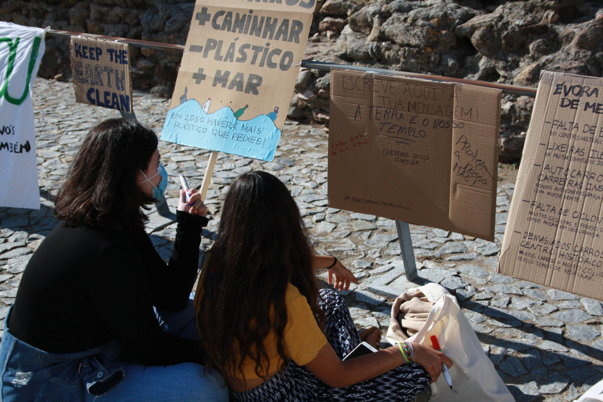
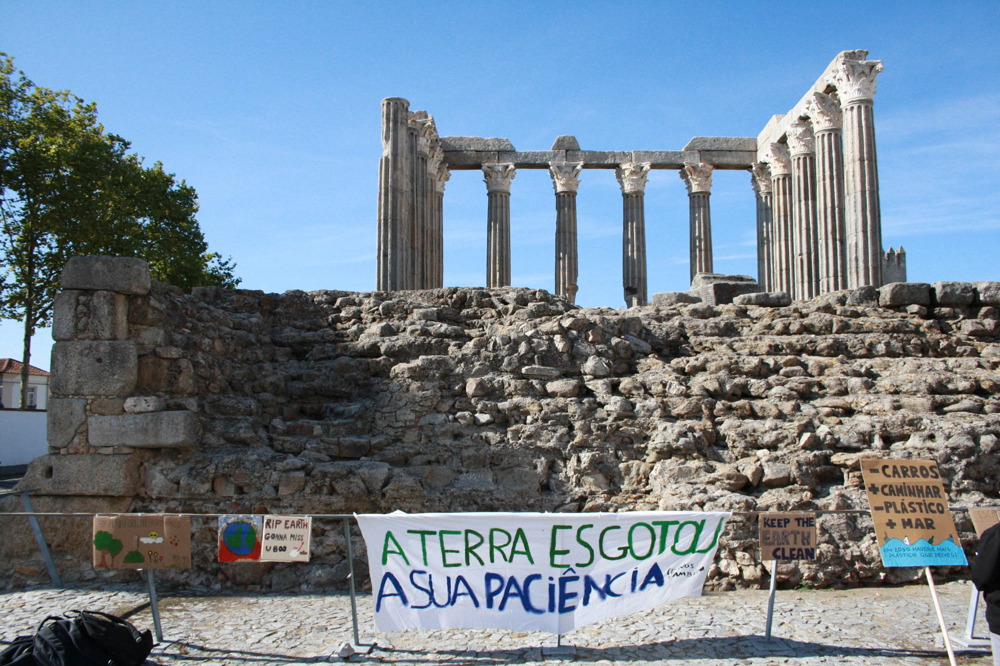
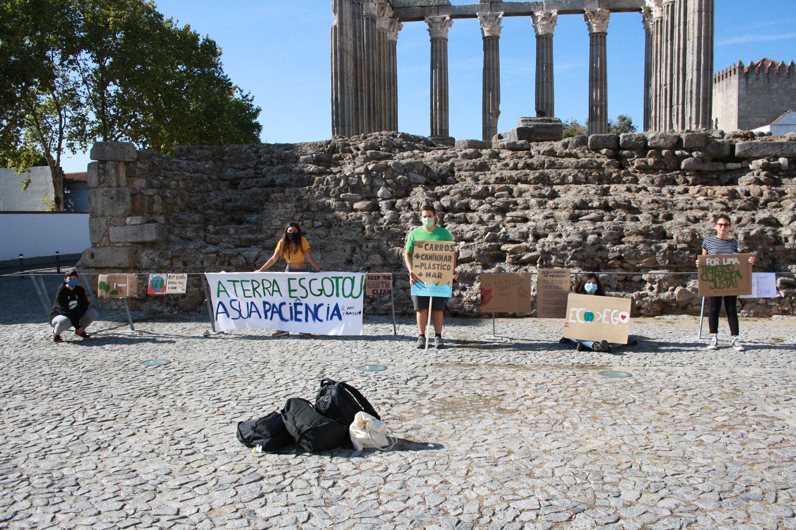
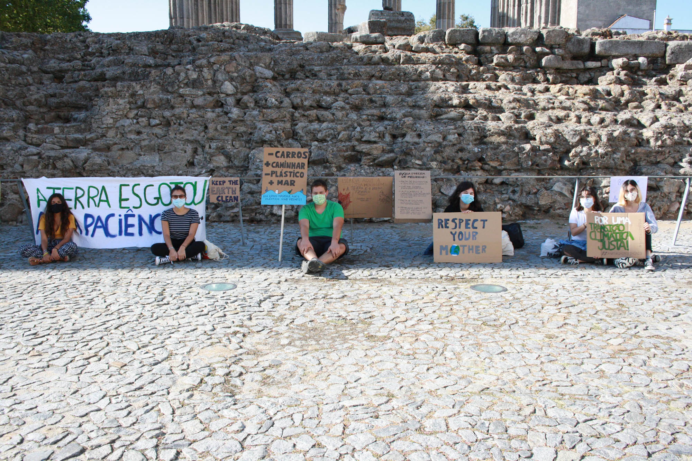

Fridays For Future
Evora
25.09.2020
Due to the Covid-19 pandemic, instead of the usually strike, we decided to change the Praça do
Geraldo gathering to an Instagram Live, called "Live for the Climate", in which we read the national claims and talked about other municipal problems.
Near the Roman Temple were only members of the nucleus with banners. We invited people to participate by leaving only their signs on the spot.
Click here to read the article about the strike by RTP Noticias.
Goals
- National
- Fair climate transition
- Fair re-qualification of workers in polluting sectors
- Cease concessions for the exploitation of fossil fuels in Portugal
- Investment and electrification of the Portuguese railway
- Creation of a public sector for the renewable energy production process
- Cancellation of projects that lead to an increase in greenhouse gas emissions
- Access to quality housing for the entire population
- Regional
- Increase the number of recycling waste bins in the city centre
- Existence of illegal dumps
- Insufficient buses and routes
- Lack of bike paths
- Too many cars in the city centre




×